—
El paquete ggplot2
Los tres paquetes básicos para hacer gráficos bidimensionales que tiene R son:
- base: el paquete básico, no hay que cargar nada, sus funciones vienen pre-cargadas.Cada elemento del gráfico hay que dibujarlo individualmente.
- ggplot2: una gran mejora del paquete básico donde, además, muchos elementos útiles del gráfico salen directamente.
- lattice: una alternativa a ggplot2 pero menos lograda, en mi opinión.
Una pequeña muestra de que ggplot2 vale la pena con respecto al paquete básico:
#Base
with(airquality, {
plot(Temp, Ozone)
lines(loess.smooth(Temp, Ozone))
})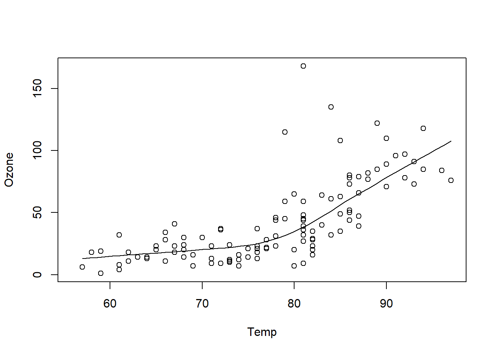
#ggplot2
library(ggplot2)
ggplot(data = airquality, aes(x = Temp, y = Ozone)) +
geom_point() +
geom_smooth()
La función que permite explotar el paquete ggplot2 es ggplot, aunque el paquete incluye una función más sencilla de aprender pero más limitada, qplot (“quick plot”), pensada para facilitar la transición desde el paquete gráfico básico. Conviene centrase en ggplot.
El marco de datos mpg (“miles per gallon”) para hacer ejemplos
El marco de datos “mpg” es un marco de datos para hacer ejemplos que viene incluido en el propio paquete “ggplot2”. Contiene información sobre modelos de coches. Nos vamos a centrar en 5 campos y a renombrarlos para mayor claridad:
- manufacturer: marca del modelo de coche
- model: modelo
- displ: volumen en litros del motor
- hwy: millas que puede recorrer el coche gastando sólo un galón de combustible
- drv: tipo de tracción (delantera, trasera o en las cuatro ruedas)
library(dplyr)
coches <- mpg %>% select (manufacturer, model, displ, hwy, drv) %>%
rename(marca = manufacturer,
modelo = model,
litros = displ,
millas = hwy,
traccion = drv)
DT::datatable(coches[c(1, 19, 51, 81, 101),], options = list(dom = 't'))Los tres gráficos exploratorios básicos: histograma, diagrama de dispersión y diagrama de cajas.
Un gráfico creado con la función ggplot tiene varios componentes. Los más comunes son:
- “data”: indica el marco de datos que contiene las variables a dibujar
- “aes”: indica las variables a dibujar y sus características “estéticas” tales como color, tamaño, forma y ubicación
- (“data” y “aes” son imprescindibles, son lo primero que se indica y se indican juntas; por ello, se puede considerar que, ambas, son el primer componente)
- “geom”: indica los elementos geométricos a utilizar (puntos, líneas, tipo de diagrama, …)
- facets: indica que hay que dividir el gráfico en paneles y cómo diseñarlos
- stats: indica cálculos estadísticos a utilizar, tales como curvas de regresión
Histograma
Es un gráfico en el se levantan barras de una anchura fija; las bases de las barras cubren todos los valores de una variable (una columna de un marco de datos) y la altura de cada barra indica la frecuencia de los valores incluidos en la base.
Se indica que queremos un histograma pasando a la función “ggplot”:
- data = el marco de datos en cuestión
- elementos estéticos: x = la variable en cuestión
- geometría: geom_histogram()
- color: para indicar el color del borde de las barras y que no aparezcan solapadas
- fill: para indicar el color del relleno de las barras, que es gris por defecto
- binwith: para indicar el ancho de las barras
ggplot(data = coches, aes(x = litros)) +
geom_histogram(color = "white", fill = "blue", binwidth = 0.25)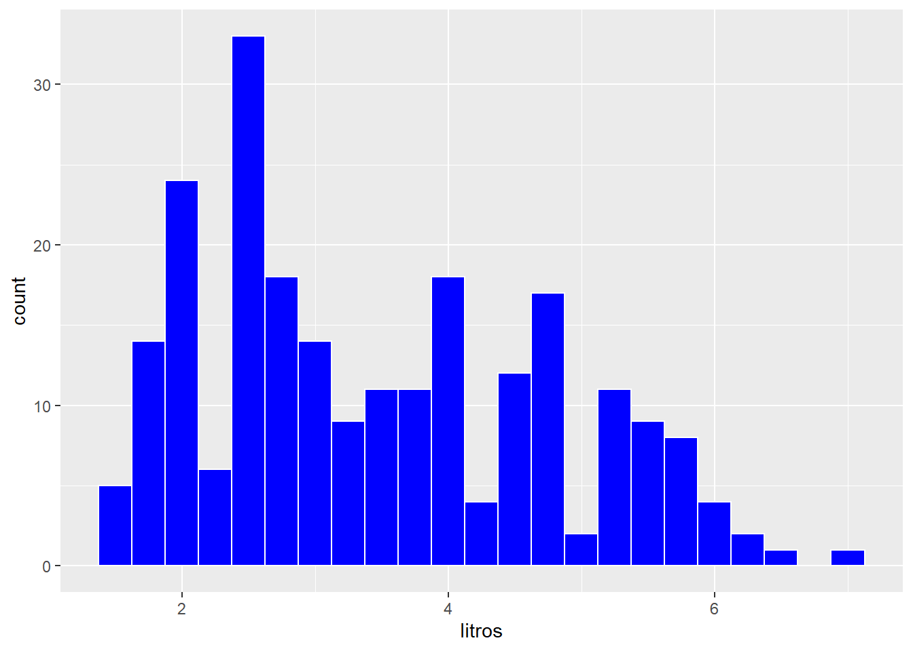
Con el componente “labs” se pueden dar nombres descriptivos a los ejes y al gráfico:
ggplot(data = coches, aes(x = litros)) +
geom_histogram(color = "white", fill = "blue", binwidth = 0.25) +
labs(title = "Histograma",
x = "Volumen en litros del motor",
y = "Número de coches")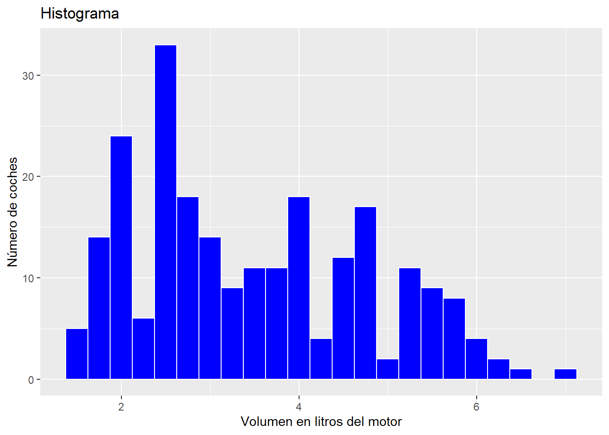
Diagrama de dispersión (scattered plot)
Es un gráfico que contiene un punto por cada pareja de valores de dos variables numéricas (dos columnas del marco de datos). El diagrama de dispersión sólo dibuja un punto cada vez que encuentra una combinación de valores de las variables indicadas. No da información acerca de si ha encontrado la combinación 1 vez o 1 millón de veces.
Se indica que queremos un diagrama de dispersión pasando a la función “ggplot”:
- data = el marco de datos en cuestión
- elementos estéticos: x = primera variable, y = segunda variable
- geometría: geom_point()
- color: color de los puntos que por defecto es el color negro.
ggplot(data = coches, aes(x = litros, y = millas)) +
geom_point(color = "blue") +
labs(title = "Diagrama de dispersión",
x = "Volumen en litros del motor",
y = "Millas que se pueden hacer con un galón")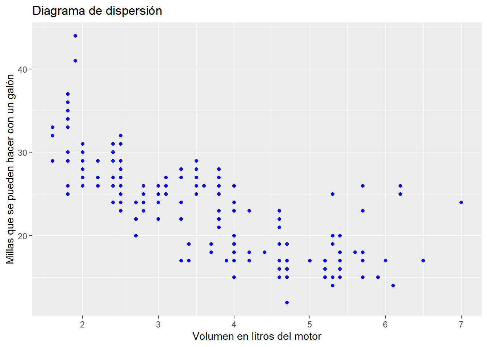
Es muy habitual añadir al diagrama de dispersión una curva de regresión. Para eso tan sólo hay que añadir la geometría “geom_smooth()”. Con la curva de regresión, ggplot2 dibuja también una sombra que representa el intervalo de confianza. El método de cálculo es “loess”, una mejora del clásico método de mínimos cuadrados.
ggplot(data = coches, aes(x = litros, y = millas)) +
geom_point() +
geom_smooth() +
labs(title = "Diagrama de dispersión",
x = "Volumen en litros del motor",
y = "Millas que se pueden hacer con un galón")## `geom_smooth()` using method = 'loess' and formula 'y ~ x'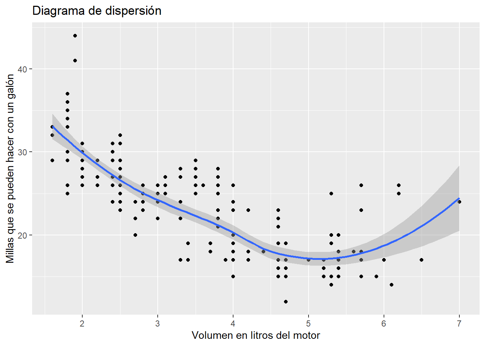
Diagrama de cajas (boxplot)
El diagrama de cajas muestra una caja cuya base es el primer cuartil, la tapa es el tercer cuartil, la mediana (que cae dentro de la caja) se marca claramente y se añaden dos líneas perperdiculares a la caja (llamadas “bigotes de la caja”) con longitud igual a 1,5 veces la altura de la caja.
Se pintan también aquelos valores (si existen) que quedan fuera de los bigotes de la caja. Estos valores se consideran atípicos (“outliers”).
Se indica que queremos un diagrama de cajas pasando a la función “ggplot”:
- data = el marco de datos en cuestión
- elementos estéticos: x ="", y = la variable en cuestión
- geometría: geom_boxplot()
- color: color de las líneas que por defecto es el color negro.
- fill: color de relleno de la caja.
ggplot(data = coches, aes(x="", y = litros)) +
geom_boxplot(color = "blue", fill = "orange") +
labs(title = "Diagrama de cajas",
x = "Volumen en litros del motor",
y = "Cuartiles")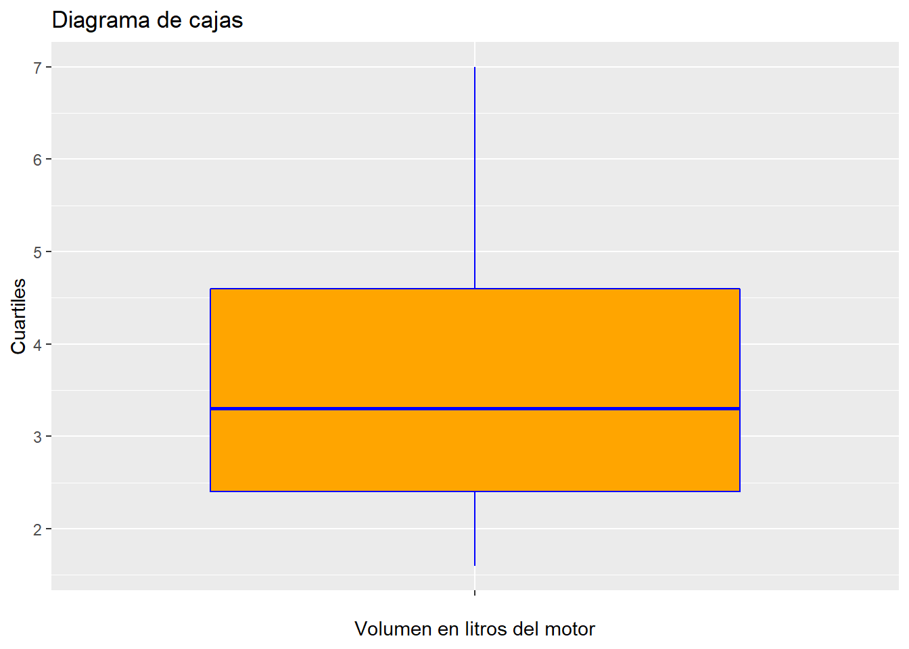
La tercera dimensión: el color
ggplot2 es un paquete gráfico bidimensional, es decir, los gráficos se refieren básicamente a dos variables “x, y”. Pero utilizando las posibilidades de colorear los datos en función de otras variables se puede obtener información impactante que excede de lo bidimensional.
Colores en un un Histograma
Utilizamos el parámetro “fill” pero no dentro de la geometría (en cuyo caso indicaría un color fijo de relleno) sino dentro de los elementos estéticos, asociado a una variable. Esto hace que el relleno dependa de los valores de la variable:
ggplot(data = coches, aes(x = litros, fill = traccion)) +
geom_histogram(color = "white", binwidth = 0.3) +
labs(title = "Histograma",
x = "Volumen en litros del motor",
y = "Número de coches")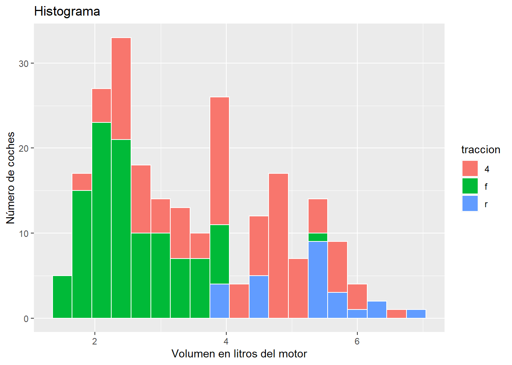
Se puede notar que los valores de “tracción” son poco significativos. Una opción sería renombrarlos pero hay una opción menos “invasiva”: convertir la variable de carácter a factor. Los factores son como caracteres pero tienen la posibilidad de llevar una etiqueta para cada valor y, en caso de llevarla, ggplot2 la utilizará en lugar del valor.
# Convertimos el campo "tracción" de tipo caracter a tipo factor
coches = coches %>% mutate (traccion = as.factor(traccion))
# Añadimos etiquetas al campo "tracción"
coches$traccion <- factor(coches$traccion,
levels = c("f","r", "4"),
labels = c("delantera","trasera","4x4"))Imprimimos de nuevo el histograma y ya se se utilizan las etiquetas en lugar de los valores del campo “tracción”:
ggplot(data = coches, aes(x = litros, fill = traccion)) +
geom_histogram(color = "white", binwidth = 0.3) +
labs(title = "Histograma",
x = "Volumen en litros del motor",
y = "Número de coches")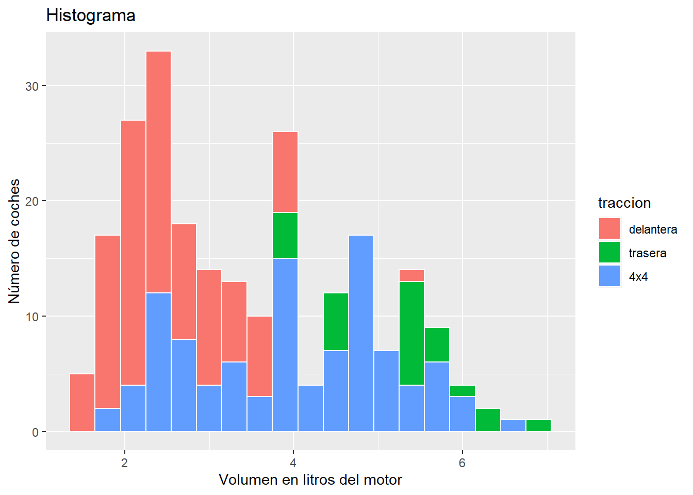
En este ejemplo se ve claramente que la tracción delantera se da mayoritariamente en la primera mitad de los litros y la tracción trasera en la segunda mitad, mientras que la tracción 4x4 está repartida de manera más uniforme.
Colores en un diagrama de dispersión
Utilizamos el parámetro “color” pero no dentro de la geometría (en cuyo caso indicaría un color fijo de dibujo) sino dentro de los elementos estéticos, asociado a una variable. Esto hace que el color de dibujo dependa de los valores de la variable:
ggplot(data = coches, aes(x = litros, y = millas, color = traccion)) +
geom_point() +
labs(title = "Diagrama de dispersión",
x = "Volumen en litros del motor",
y = "Millas que se pueden hacer con un galón")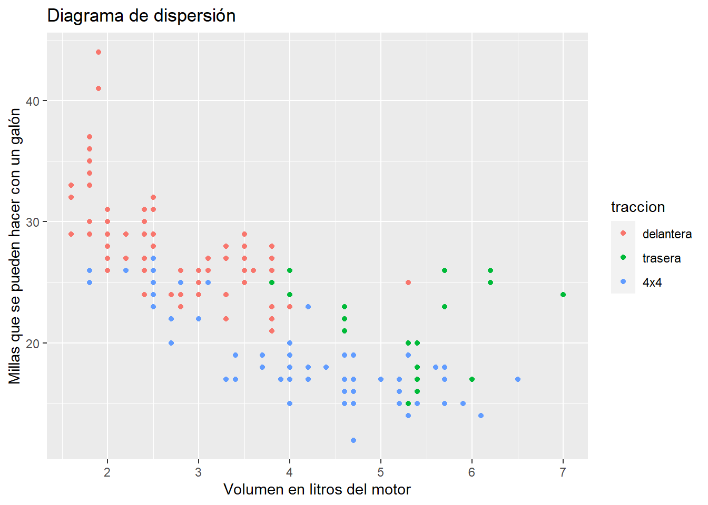
En este ejemplo se puede ver, sin necesidad de haber coloreado, que los motores de menos litros permiten recorrer más millas con un único galón de combustible. Pero gracias al color se aprecia que son realmente los motores de pocos litros y tracción delantera los que recorren muchas millas con un único galón.
Colores en un diagrama de cajas (boxplot)
Utilizamos el parámetro “fill” pero no dentro de la geometría (en cuyo caso indicaría un color fijo de relleno) sino dentro de los elementos estéticos, asociado a una variable. Esto hace que el relleno dependa de los valores de la variable:
ggplot(data = coches, aes(x="", y = litros, fill = traccion)) +
geom_boxplot() +
labs(title = "Diagrama de cajas",
x = "Volumen en litros del motor",
y = "Cuartiles")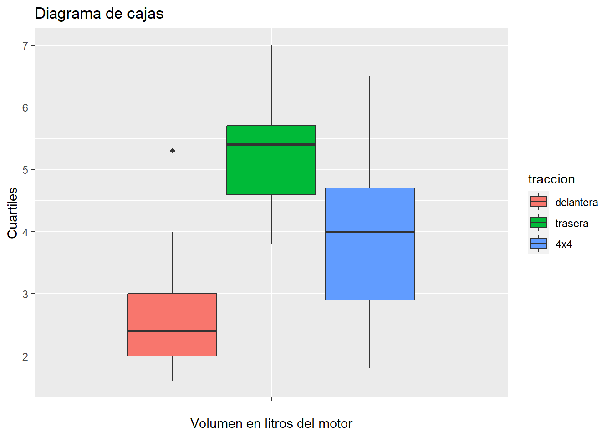
La otra tercera dimensión: los paneles
Una alternativa a colorear los gráficos en función de los valores de una tercera variable es dibujar varias veces el gráfico, correspondiendo cada dibujo a un valor de la tercera variable.
Para eso se añade al gráfico el componente “facet_grid”. La nomenclatura es “facet_grid(z1~z2)”, donde z1 y z2 son variables del marco de datos. La variable z1 provoca un desglose en tantas filas como valores tenga z1. La variable z2 provoca un desglose en tantas columnas como valores tenga z2. Si sólo nos interesa desglosar por una variable, se utiliza un “.” en lugar de la otra. Veamos cómo.
Paneles en un histograma
ggplot(data = coches, aes(x = litros)) +
geom_histogram(color = "white", fill = "blue", binwidth = 0.25) +
facet_grid(.~traccion) +
labs(title = "Histograma",
x = "Volumen en litros del motor",
y = "Número de coches")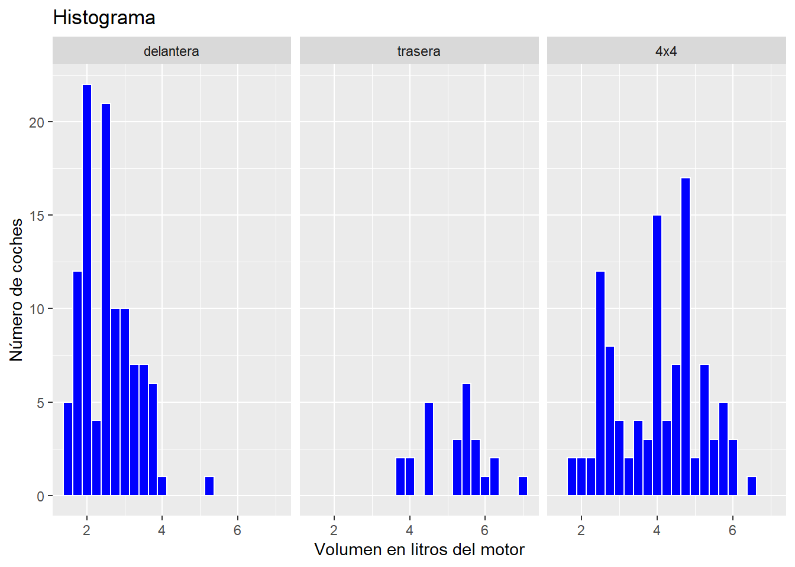
Paneles en un diagrama de dispersión
ggplot(data = coches, aes(x = litros, y = millas)) +
geom_point(color = "blue") +
facet_grid(.~traccion) +
labs(title = "Diagrama de dispersión",
x = "Volumen en litros del motor",
y = "Millas que se pueden hacer con un galón")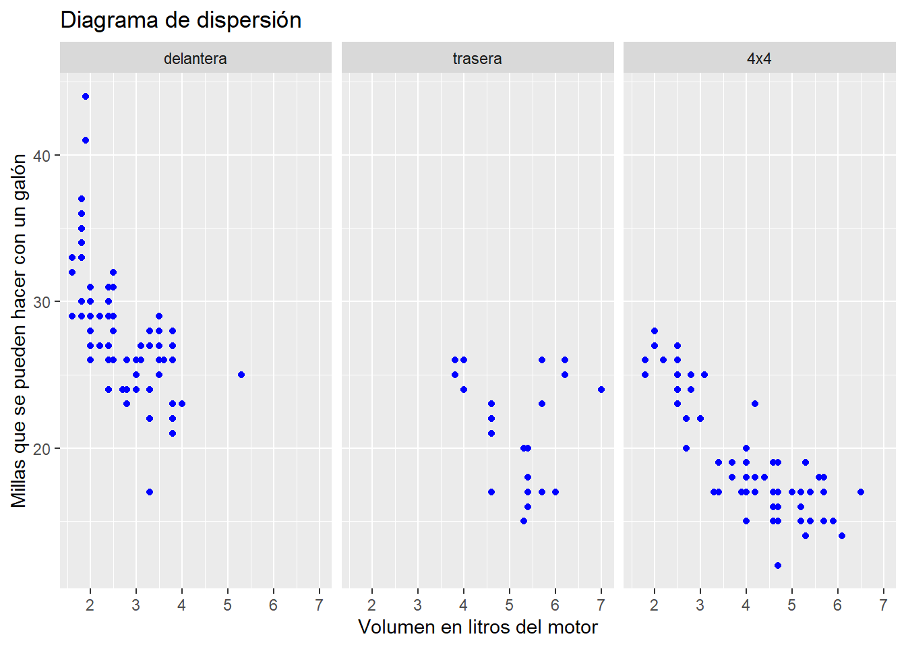
Paneles en un diagrama de cajas
ggplot(data = coches, aes(x="", y = litros)) +
geom_boxplot(color = "blue", fill = "orange") +
facet_grid(.~traccion) +
labs(title = "Diagrama de cajas",
x = "Volumen en litros del motor",
y = "Cuartiles")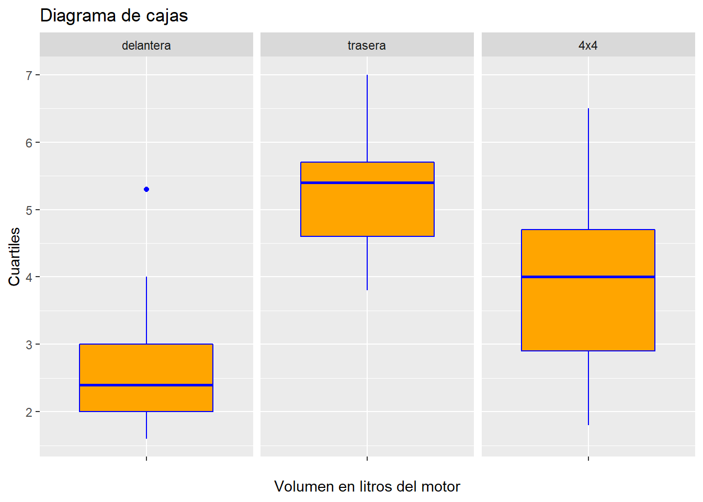
Guardar un gráfico
ggplot2 permite exportar fácilmente a pdf y png.
Exportar a pdf. Las dimensiones se dan en pulgadas. Por defecto, se utiliza: width=7, height=7.
pdf("ggplot2.pdf", width=12, height=8)
ggplot(data = coches, aes(x = litros, y = millas)) +
geom_point(color = "orange") +
geom_smooth()
dev.off()## png
## 2unlink("ggplot2.pdf") #eliminamos el pdf generadoExportar a png. Las dimensiones se dan pixeles y la resolución en dpi. Por defecto, se utiliza: width=480, height=480, res=72.
png("ggplot2.png", width=800, height=600, res=50)
ggplot(data = coches, aes(x = litros, y = millas)) +
geom_point(color = "orange") +
geom_smooth()
dev.off()## png
## 2unlink("ggplot2.png") #eliminamos el png generadoAumentar el tamaño de los puntos en proporción a su frecuencia
Un diagrama de dispersión dibuja un punto por cada pareja de valores y no hay forma de saber si esa pareja de valores apareció una vez o cien veces. Pero si hacemos esa cuenta podemos pasarla en los elementos estéticos mediante el parámetro “size”.
coches <- coches %>%
select (litros, millas) %>%
group_by(litros,millas) %>%
mutate(veces = n())
DT::datatable(head(coches, 5), options=list(dom="t"))ggplot(coches, aes(x = litros, y = millas, size = veces)) +
geom_point(color = "blue") +
labs(title = "Diagrama de dispersión",
x = "Volumen en litros del motor",
y = "Millas que se pueden hacer con un galón")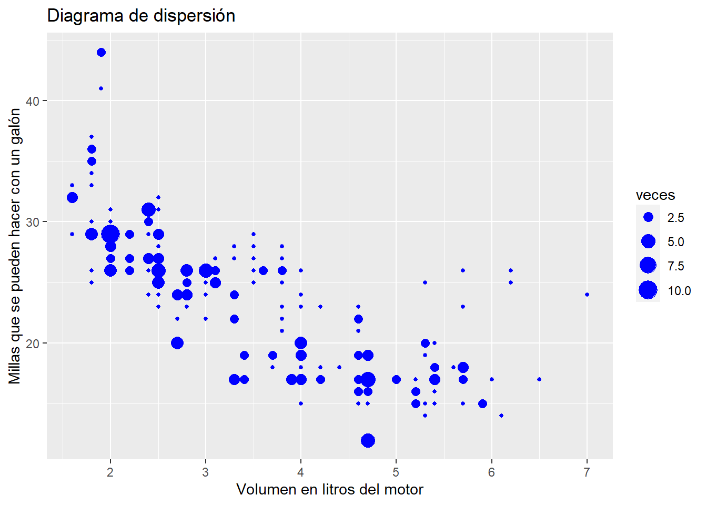
También podemos pasar la cuenta en el parámetro “color” e indicar un escala de colores como “del verde al púrpura” mediante el componente “scale_colour_gradient”:
ggplot(coches, aes(x = litros, y = millas, color = veces)) +
geom_point() +
scale_colour_gradient(low = "green", high="purple") +
labs(title = "Diagrama de dispersión",
x = "Volumen en litros del motor",
y = "Millas que se pueden hacer con un galón")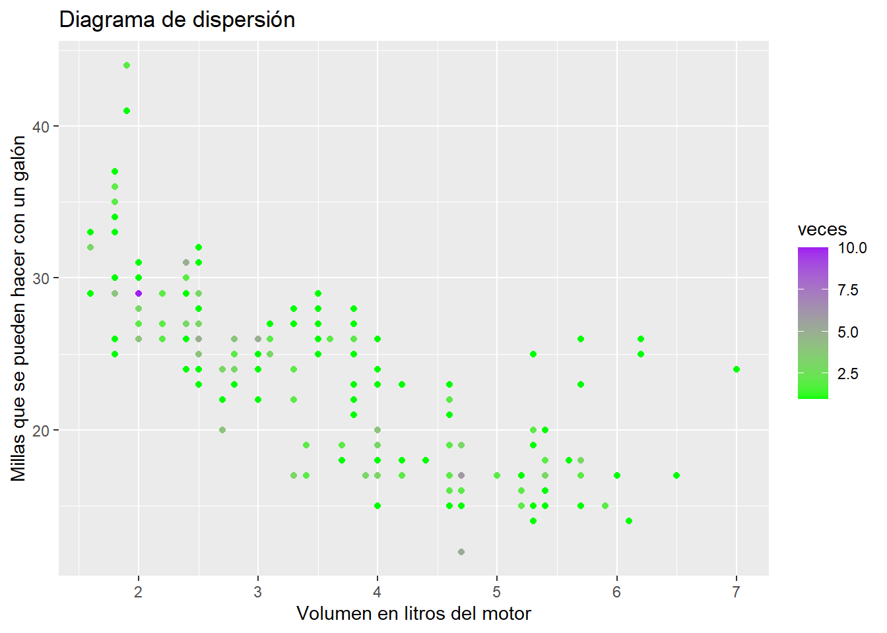
Y, por supuesto, podemos combinar ambos efectos:
ggplot(coches, aes(x = litros, y = millas, size = veces, color = veces)) +
geom_point() +
scale_colour_gradient(low = "green", high="purple") +
labs(title = "Diagrama de dispersión",
x = "Volumen en litros del motor",
y = "Millas que se pueden hacer con un galón")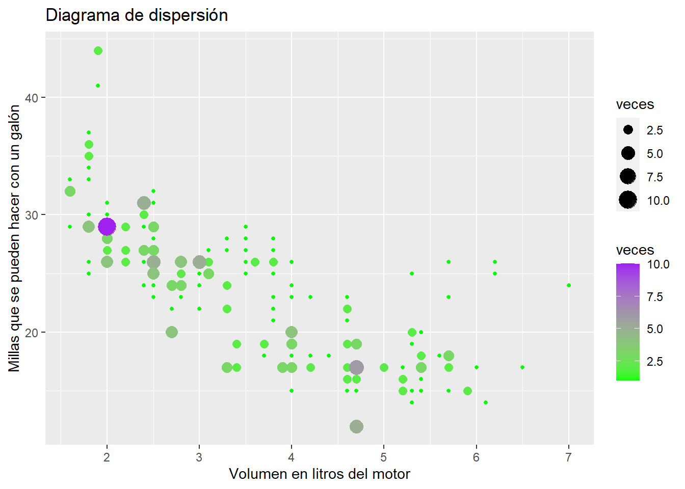